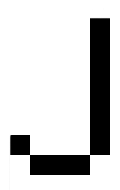
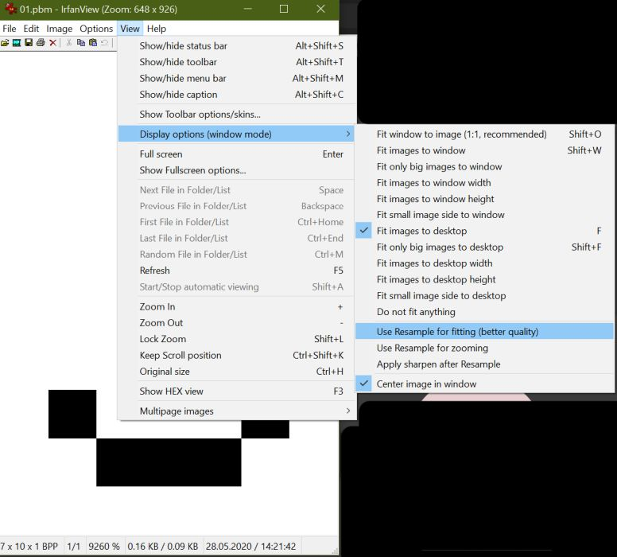
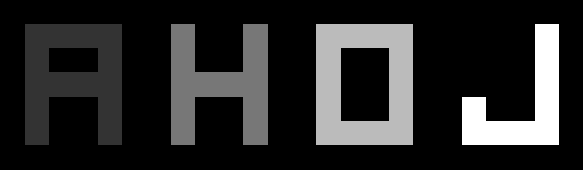
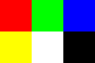

NetPBM
by Jiří Znamenáček
Úvod
Rodinu grafických formátů PBM (někdy též souhrnně nazývanou PNM, portable anymap format) vymyslel v 80. letech Jef Poskanzer. Jeho původním záměrem bylo vytvořit monochromatický grafický formát, který by se dal přenášet v těle emailu jako obyčejné ASCII.
Později byl formát rozšířen o možnost zobrazení škály šedé a klasické 8-bitové RGB-spektrum a nakonec i o 16-bitové (které je ale dosti nestandardizované). Je sice velmi nešikovný na uchovávání větších objemů dat, protože jde v podstatě pouze o nekomprimovanou sekvenci údajů o jednotlivých pixelech obrázku, ale na druhou stranu se s ním z úplně stejného důvodu velmi snadno pracuje, a proto je často používán jako pracovní grafický formát.
Dnes se o jeho udržování stará projekt Netpbm.
Rozdělení
Rodina formátů Netpbm je extrémně jednoduchá na zpracovávání (a ruku v ruce s tím extrémně nevhodná na uchovávání :). Obsahuje celkem 6 různých formátů lišících se barevnou „hloubkou“ a typem kódování:
| identifikátor pro kódování ASCII / binary |
typ |
|---|---|
| P1 / P4 | PBM = portable bitmap (černobílé) |
| P2 / P5 | PGM = portable graymap (odstíny šedé) |
| P3 / P6 | PPM = portable pixmap (RGB) |
ASCII se bezvadně čte, ale pochopitelně je oproti binary pekelně nafouknuté – kde v binárním P6 pro zápis RGB-pixelu stačí 3 bajty, tam ASCII P3 potřebuje bajtů až 11 (a to počítám pouze mezery mezi barvami jednoho pixelu, nikoli mezi jednotlivými pixely).
Struktura
Struktura PNM-formátů je obecně následující:
identifikátor↵↵ # identifikátor podle tabulky výše [# komentář↵↵] # nepovinný; často je zde název souboru šířka↵↵výška↵↵ # rozměry zadány jako dekadické číslo v ASCII maximální-počet-barev↵ # zadán jako dekadické číslo v ASCII; >0 & <=255 (resp. 65536) data-obrázku # „mřížka“ pixelů o daném počtu řádků a sloupců
↵↵ představuje libovolný počet bílých znaků (whitespace, tj. mezery, TABy, CR, LF), ↵ zastupuje právě jeden bílý znak.
Dejte si pozor, kam a jak píšete komentáře – obecně všechno za znakem # je pokládáno za komentář, to znamená i uprostřed řádky (a hlavně odřádkování na konci komentáře), což může někdy udělat nečekanou paseku. Podobně není (u ASCII-kódování) doporučováno mít datové řádky delší než 70 znaků. A nakonec data obrázku by také měla končit na whitespace, protože některé programy si s tím jinak neporadí.
PBM ASCII
Struktura PBM je obecně následující (nyní už zjednodušeně oproti obecnému popisu z předchozího slajdu):
identifikátor šířka výška data-obrázku
Pro ukázku PBM-souboru (tj. černobílého) si ukažme jednoduché písmeno J ve variantě P1, tj. ASCII:
V tomto souboru je zaznamenán následující obrázek (dvacetkrát zvětšené):

PS: Formát P1 je také jediný, ve kterém můžete vynechat mezery mezi daty obrázku – rozlišení mezi 0 a 1 je zadrátováno ve všech prohlížečích.
PBM binary
Binární podoba, tedy varianta P4, se z pochopitelných důvodů úspornosti liší od binárních variant vícebarevných formátů PGM a PPM:
Po hlavičce, která je společná ASCII i binární variantě, následují (za povinným právě jedním prázdným znakem/bajtem) data obrázku v podobě – co 8 pixelů, to jeden bajt.
Každých osm sloupečků je tedy sloučeno do jednoho bajtu, ve kterém jejich barvové hodnoty (černá/bílá) představuje nastavení příslušných bitů (0/1). „Přebytečné“ sloupečky (tedy sloupečky, které musíme doplnit, abychom dostali celý počet bajtů) jsou „shrnuty“ do posledního bajtu v podobě nul.
PS: Vynucení zobrazení pixelů bez vyhlazování
Jelikož při ladění PNM-obrázků je poměrně důležité vidět jednotlivé pixely a jelikož prakticky všechny běžně používané zobrazovače mají ve výchozím nastavení zapnuto vyhlazování obrázků (pokud neděláte s něčím určeným specificky pro pixel art), je třeba uvedené vypnout. Zde pro příklad nastavení prohlížeče IrfanView:

PGM ASCII
Struktura PGM je obecně následující (opět zjednodušeně oproti obecnému popisu):
identifikátor šířka výška maximální-počet-stupňů-šedi data-obrázku
Jako příklad PGM (tj. obrázek ve stupních šedi) ve variantě P2, tj. ASCII, si ukažme následující:
V tomto souboru je zaznamenán následující obrázek (asi třicetkrát zvětšené):

PS: Navzdory logice zde mezera mezi jednotlivými pixely je nutná i v případě, že používáme pouze barvy s maximálním indexem 9. Optimalizované rozlišení mezi jedno- a vícecifernými čísly už není nikde přítomno.
PGM binary
Binární podoba, tedy varianta P5, je zcela průhledná:
Po hlavičce, která je společná ASCII i binární variantě, následují (za povinným právě jedním prázdným znakem/bajtem) data obrázku v podobě – co pixel, to jeden bajt.
Binární varianta tedy sdílí – samozřejmě až na identifikátor – s ASCII-variantou hlavičku (a to klidně až po finální bílý znak, který ale musí být opravdu jen a pouze jeden*) a k vlastnímu ušetření paměti dochází až na úrovni dat obrázků.
PPM ASCII
Struktura PPM je obecně následující (opět zjednodušeně oproti obecnému popisu):
identifikátor šířka výška maximální-počet-barev data-obrázku
PPM se od PGM liší tím, že na každý pixel musí zaznamenat tři barvy, a to postupně v pořadí R-G-B (tj. červená, zelená, modrá). Použijeme-li podobně přehledný způsob zaznamenání jako dříve, následující obrázek (šedesátčtyři-krát zvětšeno)

bude v ASCII-variantě P3 zapsán takto:PPM binary
Binární podoba, tedy varianta P6, je opět zcela průhledná a prakticky stejná, jako u P5 (šedotónový binární), pouze na každý pixel připadají nyní tři barvové údaje (za červenou, zelenou a modrou složku):
Po hlavičce, která je (až na identifikátor) společná ASCII i binární variantě, následují (za povinným právě jedním prázdným znakem/bajtem) data obrázku v podobě – co pixel, to právě tři bajty (postupně R, G a B).
Srovnávací tabulka
| formát | varianta | kódování | poznámky |
|---|---|---|---|
| PBM | P1 | ascii |
Daty jsou buď 0 (bílá) nebo 1 (černá).
1 pixel ~ 1 znak (mezera nepovinná) |
| P4 | binární |
8 pixelů ~ 1 bajt
Doplňkové sloupečky součástí posledního bajtu (většinou jako nuly). |
|
| PGM | P2 | ascii |
Daty jsou čísla od 0 (černá) po nejvyšší odstín (bílá).
1 pixel ~ až 3 znaky (plus další na mezeru) |
| P5 | binární | 1 pixel ~ 1 bajt | |
| PPM | P3 | ascii |
Daty jsou trojce čísel od 0 po (převážně) 255.
1 pixel ~ až 11 znaků (plus další na mezeru) |
| P6 | binární | 1 pixel ~ 3 bajty |
Poznámky
ASCII-kódování znamená, že to jsou řetězcové údaje v kódování ASCII! V základním nastavení by to mělo být v pořádku, protože spodní polovina jednobajtových kódování (ve většině případů ) i UTF8 bez BOMu jsou v podstatě právě ASCII.
Rozložení pixelů do řádek v datech obrázku není podstatné – zpracovávající program ví vše potřebné už z hlavičky. Pouze se doporučuje, aby u ASCII-formátů nebyla žádná z řádek delší než 70 znaků.
Komprese do bajtů mezi ASCII-formátem a binárním formátem se projevuje až na úrovni dat obrázků – celá hlavička je zaznamenána znakově v ASCII!
Rozšíření na 16-bitovou barevnou hloubku s sebou nese potřebu rozhodnout o pořadí příslušných dvou bajtů. Nepřekvapivě se na tom jednotlivé implementace neshodnou, ale de facto standard Netpbm bere jako nejvýznamější bajt ten první.